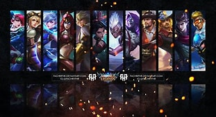

What are Marksmen?
Marksmen are often defined as those heroes that are long-ranged and deals Physical damage to enemies. They are also known to be very weak in the early stages of the game and will eventually deal large amount of sustained damage to enemies upon accumulating gold, experience, and items. Let us mow get into a technical view of marksmen.
Marksmen are ranged heroes whose power is almost entirely based on their basic attacks: by using their reach to land massive continuous damage from a distance, marksmen are capable of taking down even the most difficult opponents when positioned behind the safety of their team, and perform better at securing objectives such as the Lord and Turtles.
Let us now classify these marksmen based on the purity of their Marksman role.
Pure marksmen that have no other roles besides the Marksman role include Miya, Bruno, Clint, Layla, Moscov, Karrie, Irithel, Hanabi, Claude, Granger, Wanwan, Popol and Kupa, Brody, Beatrix, Natan, and Melissa.
There are also marksmen that have another role but still have the primary Marksman role. These marksmen include Lesley and Kimmy.
Lastly, the marksmen with another main role but still have the secondary Marksman role include Yi Sun-Shin, Roger, and Edith.
Now, let us proceed in identifying the purpose of marksmen during in-game matches.
What do Marksmen do?

Marksmen almost always stays on the gold lane. But, there are some instances when marksmen are tasked to go the jungle. Let us talk about this more deeply now.
The gold lane is a lane in every Classic or Ranked matches that gives extra gold to heroes on the lane. This is done by putting more rewards upon eliminating the cannon minions that hold the extra gold. Marksmen are usually played on this lane since marksmen desperately need to get their items as early as possible. Having the enemy marksman gain the earlier gold and items lead will cause a snowball by the enemy team until such time that your team can not catch up anymore. This is because once the enemy marksman got the first two core items first, they are now able to burst the allied marksman down. Since the marksmen are the future of the team that will lead them to victory, this will instantly put them on a huge disadvantage. This is why as much as possible, the roamer needs to assist the marksman on the gold lane. When marksmen are on the sidelanes, they are almost required to stay there until either of the outer turrets get destroyed or when they have enough items to actually join the team fights. Speaking of turrets, the marksmen are also the ones needed to take down turrets. They are the most capable in breaking down turrets, unlike all the other roles. These marksmen are the easiest to kill, specially when against the assassins and mages, which is why they must have proper positioning and proper defense by the roamer. They almost always stay at the backlines and deal damage using their long-ranged basic attacks. In the late game, these marksmen deal the most damage and are the ones to carry the whole team. This will only happen if these marksmen had a good early advantage and decent snowballing with the help of the team's roamer and other allies.
Although not really recommended due to the marksmen's squishy nature, there are some marksmen that are also ideal in the jungle area. Some notable jungler marksmen include Granger, Lesley, Yi Sun-Shin, and Roger.
Whatever role the marksman plays, the team roamer's proper assistance is really necessary for the marksman. This is because marksmen are very easy to kill since they mostly prioritize building Physical damage items and avoid building defensive items as much as possible as to not run out of item slot for more damage item. With this in mind, the roamer must try to assist the marksman whenever needed, but still not forget the other lanes and the jungle areas. To the marksman players out there that had a peaceful early game due to their non-stop assistance to the team on the whole duration of the game.
Some Special Abilities of Certain Marksmen
Throw Bombs at Every Enemy!
Yi Sun-Shin's 'Mountain Shocker' (Ultimate skill)
Passive: Heavenly Vow's damage will increased by 13/5% / 27/10% / 40/15%.
Active: Yi Sun-shin summons the naval fleet to launch three waves of precise cannon attacks with each wave deals 150 / 180 / 210 (+50% Total Physical Attack) points of Physical Damage for 2 seconds.
When a target is hit by multiple waves, the waves will deal up to 150% of total damage dealt.
Free From All De-buffs
Miya's 'Hidden Moonlight' (Ultimate skill)
Miya removes all her debuffs right away, conceals herself and increases Movement Speed by 35%-65% for up to 2 seconds.
Miya also immediately gains full stacks of Moon Blessing when the concealment is over.
Four Weapons! (isn't this illegal?!?!?!?!)
Beatrix' 'Mechanical Genius' (Passive skill)
Her extraordinary talent in the field of mechanics allowed Beatrix to produce 4 weapon(s) of truly awe-inspiring firepower.
Renner Basic Attack - Longshot: Fire a powerful shot in the enemy's current direction, dealing (+360%–535% Total Physical Attack) Physical Damage to the first target hit (this shot can be dodged, or blocked by others. Deals 50% damage to creeps).
Bennett Basic Attack - Area Bombing: Choose a location to bombard, dealing (+180%–320% Total Physical Attack) Physical Damage to all enemies in that area and slowing them by 30% for 0.5 second (Deals 50% damage to creeps).
Wesker Basic Attack - Proximity Advantage: Fire 5 shots at the target, each one dealing (+125%–195% Total Physical Attack) Physical Damage (damage dealt to targets hit multiple times decays to 40%. Deals 50% damage to creeps).
Nibiru Basic Attack - Rapid Fire: Let loose a volley of 4 shots, each one dealing (+50%–67.5% Total Physical Attack) Physical Damage (Deals 50% damage to creeps).
Beatrix cannot crit, and converts every 1% Critical Chance gained into 1 Physical Attack.
Get Away From Me!!
Melissa's 'Go Away!' (Ultimate skill)
When activated, the field knocks back enemies in the area and deals 500–900 (+100% Total Magic Power) Magic Damage to them. It'll then continuously knock back enemies who attempt to enter the field, dealing 50–90 (+10% Total Magic Power) Magic Damage and briefly slowing them [by 60%]. The field will also interrupt the enemy's movement skills unless they're immune to control effects. The field will move with Melissa once, when she's about to move out of boundary.
Passive: Leaning this skill permanently increases Melissa's Physical and Magic Defense by [4.5–7.5 each]. This effect is increased to 3 times when the skill is active.)
Though there are more abilities of Marksman heroes worthy of being classified as unique and special, I am unable to cover them all in here. Hopefully, I would have some spare time in the future which would let me finish this work. Regardless, that is all about the marksmen!!